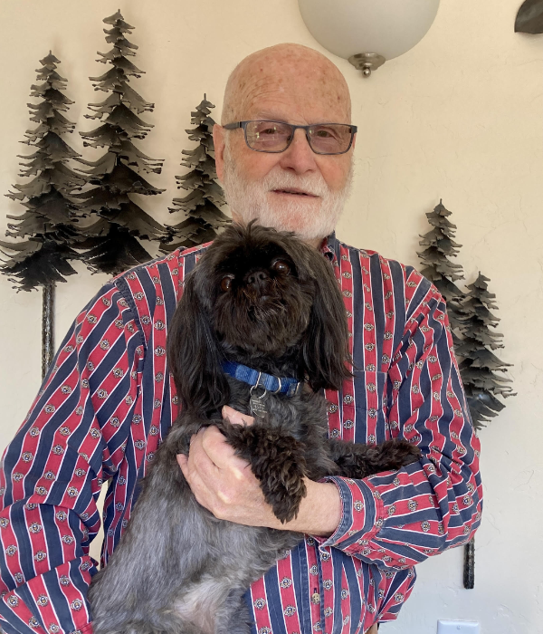
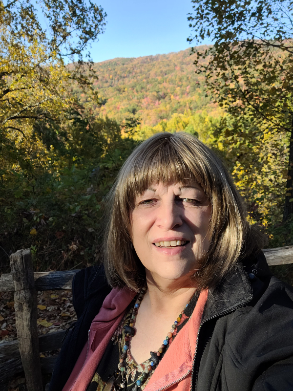
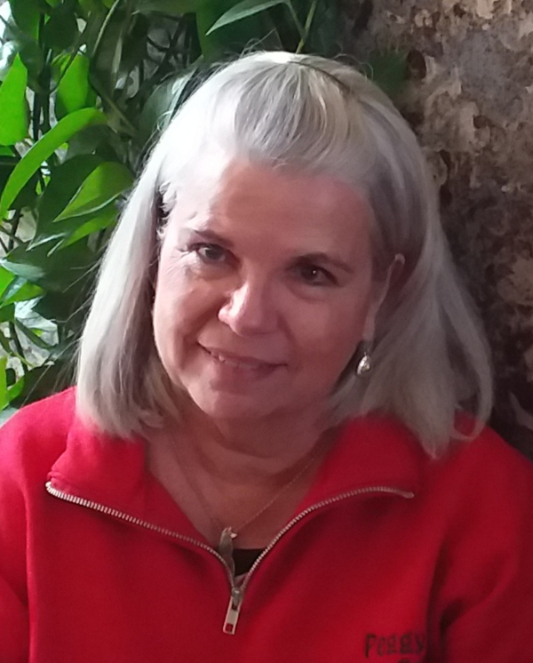
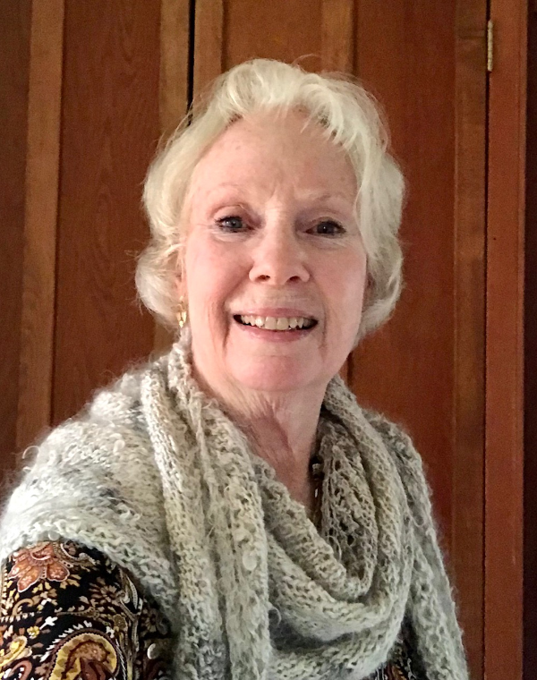
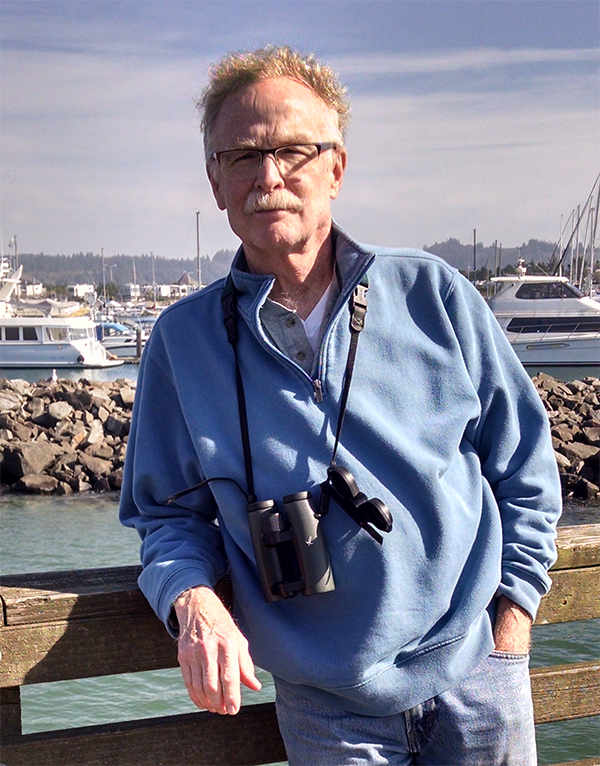
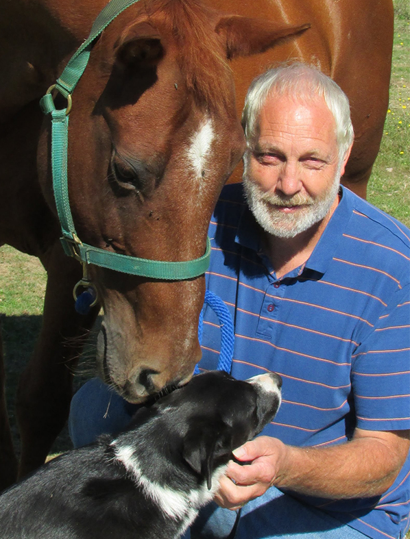
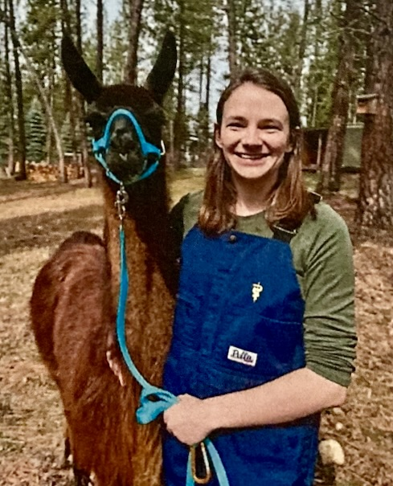

Who We Are
The Northwest Camelid Foundation is a nonprofit organization dedicated to advancing the health and well-being of llamas and alpacas through veterinary research, education, and scholarship.
Our Board of Directors and Research Committee include practicing DVMs and camelid community leaders, supported by long-standing partnerships with two of the Pacific Northwest's leading veterinary colleges.

Our Mission
The Northwest Camelid Foundation raises funds to support education and medical research for the health and well-being of camelids worldwide. We do this by funding veterinary research grants at Oregon State University and Washington State University, awarding annual scholarships to veterinary students with a focus on camelid medicine, and hosting educational events for owners across the Pacific Northwest.
Founded in 1987
NWCF was founded in 1987 by a group of camelid breeders and enthusiasts in the Pacific Northwest who recognized that llamas and alpacas needed greater veterinary attention and scientific study. What began as a grassroots fundraising effort has grown into a sustained partnership with two of the region's leading veterinary colleges.
Over more than three decades, the Foundation has funded studies touching on infectious disease, immunology, reproduction, nutrition, and more. Our partnership with OSU's Carlson College of Veterinary Medicine has helped build that institution's well-earned reputation as a national center for camelid research and education.
"Regardless of the size of their herd or the location of their barn, every camelid and every owner benefits from the research funded by the NWCF."
— Northwest Camelid FoundationHow We Operate
The Foundation is governed by a volunteer Board of Directors and supported by a Research Committee made up of experienced camelid breeders and veterinarians. A Scholarship Committee at OSU's College of Veterinary Medicine manages the annual scholarship selection process.
All proceeds from our annual fundraiser events go directly to research and to maintaining the OSU research herd. Administrative costs are kept minimal so that donor dollars have the greatest possible impact.
Board of Directors & Research Committee
The Foundation is governed by twelve volunteers — camelid breeders, practicing DVMs, and community leaders from across the Pacific Northwest and beyond. All board members also serve on the Research Committee, which evaluates grant proposals, determines funding priorities, monitors active research projects, and oversees the annual scholarship program.
Meet the Board






Veterinary School Partners
Carlson College of Veterinary Medicine
Oregon State University · Corvallis, OR
NWCF's primary and longest-standing research partner. OSU's Carlson College has built a national reputation for camelid research and education, in part through work funded by the Foundation over more than 35 years.
College of Veterinary Medicine
Washington State University · Pullman, WA
In recent years, NWCF has expanded its funding to include research and scholarships at WSU's College of Veterinary Medicine, broadening our reach and supporting a second generation of camelid specialists.